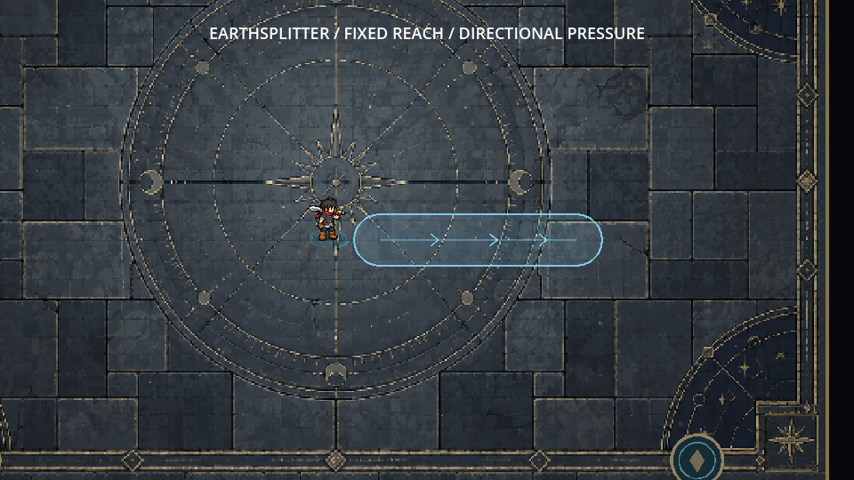
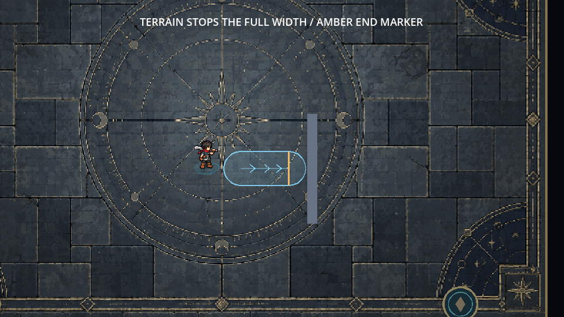
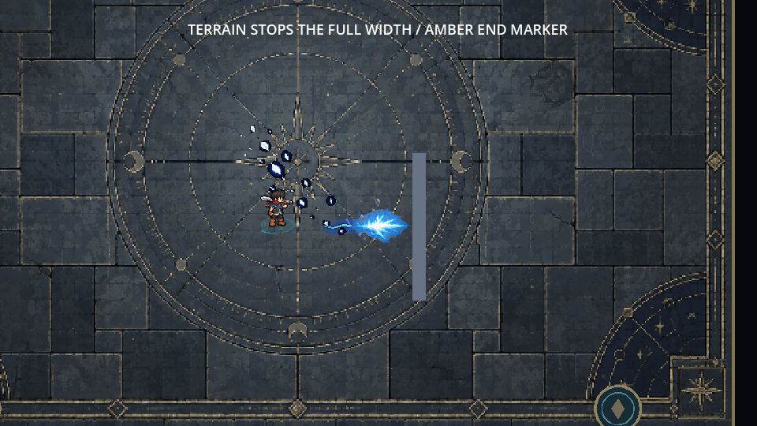

Approved sword preserved. Fixed reach, upright pressure art and a terrain-aware aiming lane. Actual Godot playback at real speed.
F7 → KING REVIEW → SKILL 1: EARTHSPLITTER. Press 1, aim, left-click. Right-click/Esc cancels. New ground art is ready for your feel review.


